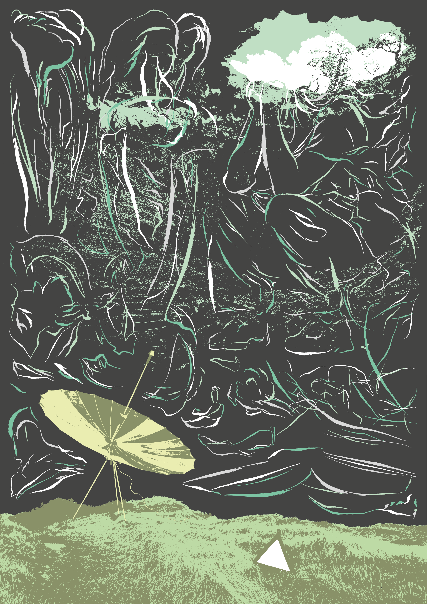
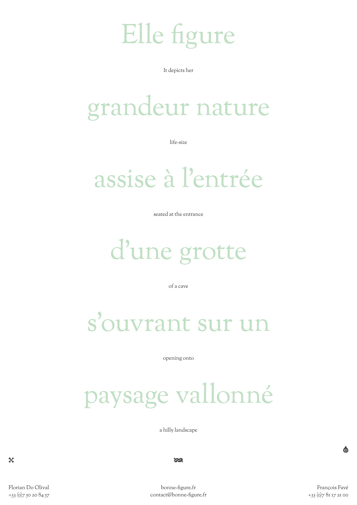

Grandeur nature
Affiche manifeste présentant notre duo bonne figure. Pensée pour être diffusée par voie postale en France et au-delà, elle a vocation à faire état de notre pratique plastique, graphique et technique sur un seul support. A manifesto poster featuring our bonne figure duo. Designed to be distributed by post in France and beyond, it aims to showcase our plastic, graphic, and technical practice on a single medium.
Date
― 2024
― 2024
Format
― affiche pliée, format ouvert folded poster, open format 42 × 59,4 cm
― affiche pliée, format ouvert folded poster, open format 42 × 59,4 cm
Technique
impression numérique
digital printing
impression numérique
digital printing

